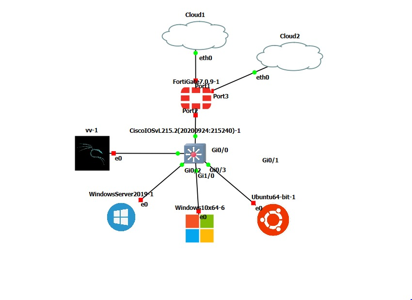
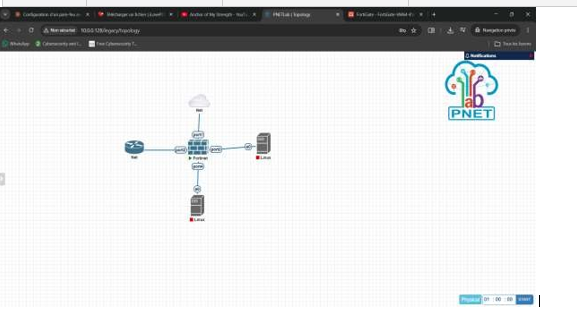
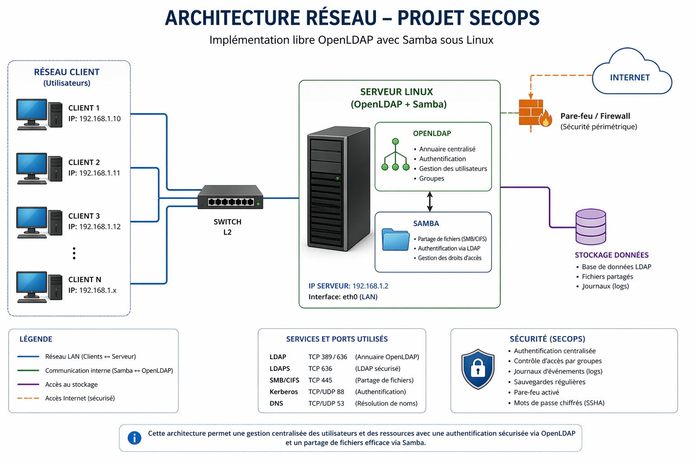
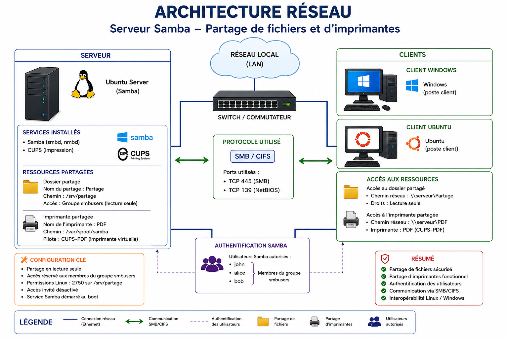
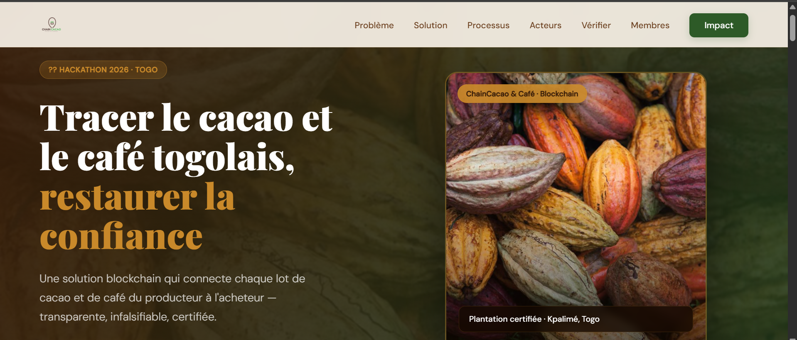

Lab GNS3 VMware segmentation VLAN sur FortiGate 7.0.9, interconnexion CiscoIOSvL2, déploiement Windows Server 2019, Ubuntu Server et Windows 10. Doc pas à pas et guide de dépannage.
Études de cas sécurité LAN DNS Spoofing pour piger les attaques de redirection, et SQL Injection avec SQLMap pour trouver et corriger les failles.

TP sécurité réseaux : infra sécurisée avec FortiGate virtualisé sur PNETLab, serveur web protégé par un WAF.

Infrastructure IAM open source centralisée pour le domaine ESIG.LOCAL annuaire OpenLDAP couplé à Samba sous Ubuntu Server 22.04, avec authentification unifiée, politique de mots de passe renforcée et TLS 1.2+.

Exos admin Linux : config services, gestion users, permissions et maintenance via terminal.

Exos avancés admin Windows Server : Active Directory, GPO, gestion users et sécurité Windows.
Initiatives
individuelles

Plateforme traçabilité cacao café par blockchain pour MIABE Hackathon 2026 site vitrine, interface mobile et supports pour convaincre un jury.